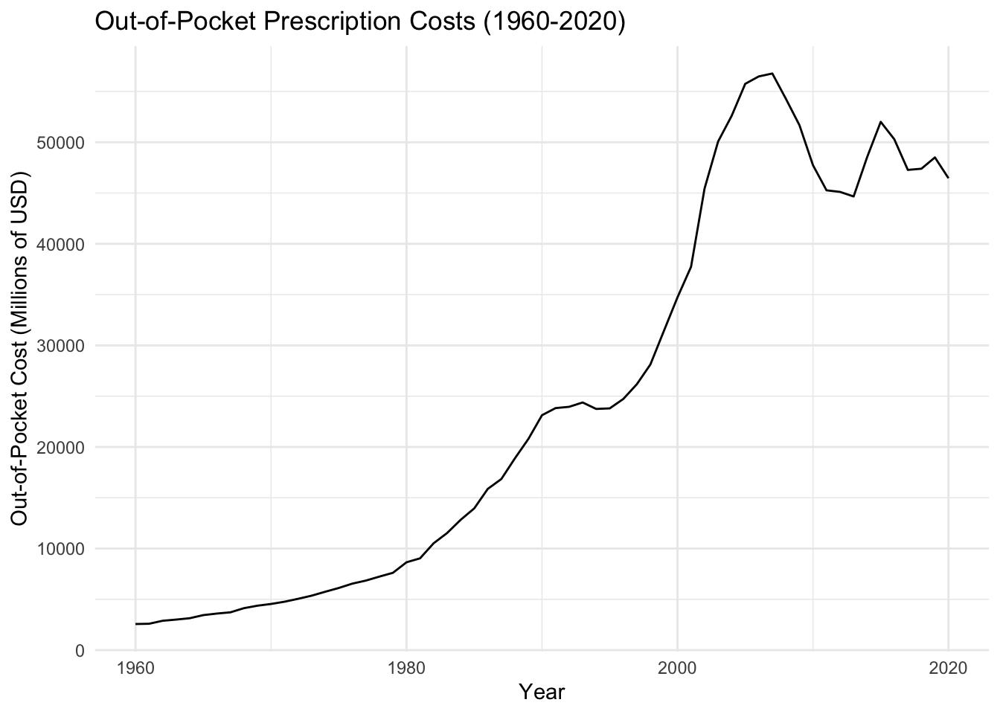

Code
library(tidyverse)
library(tidyquant)
library(ggplot2)
library(forecast)
library(astsa)
library(xts)
library(tseries)
library(lubridate)
library(plotly)
library(kableExtra)
library(dplyr)In this section, I want to use basic data visualization techniques to take an initial look at both of my datasets.
Using ggplot, I want to start to answer my first guiding question: have out-of-pocket prescription drug costs increased since 1960?
library(tidyverse)
library(tidyquant)
library(ggplot2)
library(forecast)
library(astsa)
library(xts)
library(tseries)
library(lubridate)
library(plotly)
library(kableExtra)
library(dplyr)I will first perform some basic cleaning of the dataset.
drug = read.csv("datasets/nhe_drug.csv")
drug = head(drug, -10)
drug$Total.Expenditures = as.numeric(gsub(",","",drug$Total.Expenditures))
drug$Out.of.Pocket = as.numeric(gsub(",","",drug$Out.of.Pocket))
drug$Health.Insurance = as.numeric(gsub(",","",drug$Health.Insurance))
drug$Private.Health.Insurance = as.numeric(gsub(",","",drug$Private.Health.Insurance))
drug$Medicare = as.numeric(gsub(",","",drug$Medicare))
drug$Medicaid..Title.XIX. = as.numeric(gsub(",","",drug$Medicaid..Title.XIX.))
drug$Other.Health.Insurance = as.numeric(gsub(",","",drug$Other.Health.Insurance))
drug$Other.Third.Party.Payers.and.Programs = as.numeric(gsub(",","",drug$Other.Third.Party.Payers.and.Programs))Next, I will turn the data into a time series object and plot the results.
drug.ts = subset(drug, select = Out.of.Pocket)
drug.ts = ts(drug.ts, start=1960, frequency = 1)
autoplot(drug.ts, main = "Consumer Out-of-Pocket Prescription Drug Costs (1960-2020)", xlab = "Year", ylab = "Out-of-Pocket Cost (Millions of USD)")
drug.ts.df = fortify(drug.ts)
ggplot(drug.ts.df, aes(x=x, y=y))+geom_line()+
ggtitle("Out-of-Pocket Prescription Costs (1960-2020)")+ylab("Out-of-Pocket Cost (Millions of USD)")+xlab("Year")+theme_minimal()
We can also add line breaks to observe the changes occurring in ten year intervals.
ggplot(drug.ts.df, aes(x=x, y=y))+geom_line()+
geom_vline(xintercept = seq(1960, 2020, by = 10),
linetype = "dashed", color = "red") +
ggtitle("Out-of-Pocket Prescription Costs (1960-2020)")+ylab("Out-of-Pocket Cost (Millions of USD)")+xlab("Year")+theme_minimal()From the visualizations alone, I can conclude that out-of-pocket prescription drug costs have increased over time, particularly between 1990 and 2000 and between 2000 and 2008.
Using plotly, I want to answer another guiding question, this time by seeing if the U.S. IHE ETF has increased its adjusted closing price since its establishment in 2007, and to what extent it has increased.
Once again, I will clean the dataset and turn it into a time series object before plotting.
pharma = read.csv("datasets/IHE.csv")
pharma$Date = as.Date(pharma$Date)
pharma.ts = subset(pharma, select = Adj.Close)
pharma.ts = ts(pharma.ts, start=c(2007,1),frequency = 12)
pharma.ts.df = data.frame(date=time(pharma.ts), price=as.numeric(pharma.ts))plot_ly(pharma.ts.df, x = ~date, y = ~price, type = "scatter",
mode = "lines", line = list(color = "blue")) %>%
# Add axis titles and a chart title
layout(title = "IHE ETF Adjusted Closing Prices (2007-2022)",
xaxis = list(title = "Year", tickformat = "%Y.%m"),
yaxis = list(title = "Adjusted Closing Price"))Here, we can see that the U.S. pharmaceutical industry’s market value, and therefore its overall profits and performance, has increased since 2007, especialy between the years of 2010 and 2015.